3 面向对象混合模拟框架
3.1 引言
目前，全球正在进行大量研究，以将混合模拟扩展到应用先进数值技术、实时施加边界条件、以及由地震事件、风、爆炸、冲击、波浪、火灾和交通引起的动态荷载条件的应用。同样，正在进行优化在不同实验室中测试结构部分的能力的努力，包括提高网络性能的技术。
虽然执行混合模拟只需要几个基本操作和通信协议，但迄今为止很少有努力（例如（Takahashi和Fenves 2006））开发用于实现和执行混合测试系统的通用软件框架。通常，混合模拟的每次实现和执行都是针对特定问题的，并且过去强烈依赖于计算程序、试验配置以及试验场地使用的控制和数据采集系统。这意味着混合模拟通常为每个特定问题进行硬编码。这种高度定制的软件实现很难适应不同的结构问题，甚至更难移植到不同的实验室。如果混合模拟涉及多个实验室（如地理分布模拟的情况），则尤其如此。因此，缺乏通用框架对那些考虑利用混合模拟试验研究结构的人构成了障碍；此外，也限制了该领域专家之间的协作。
软件框架是可重用系统或子系统的设计，并定义了此类系统的整体架构，即其基本组件以及它们之间的关系。因此，试验测试软件框架理想情况下应支持多种计算软件、结构试验方法、试件类型、试验配置、控制和数据采集系统以及通信协议。此外，为了加速混合模拟的开发和改进，此类软件框架应独立于环境、稳健、透明、可扩展且易于扩展。它应允许领域研究人员无需底层软件的专业知识即可执行混合模拟。同时，它还应使混合模拟和IT专家能够通过允许轻松添加新发展来扩展方法论的前沿。
在开发和实现混合模拟时，目前采用两种不同的方法。第一种是结构分析方法，其中混合模拟可以被视为常规有限元分析，其中结构某些部分的物理模型嵌入在数值模型中。第二种是控制系统方法，其中混合模拟被视为反馈系统，结构的计算部分充当控制器，物理部分类似于被控对象。虽然可以证明这两种方法导致等效算法（Sivaselvan 2006），但它们在研究混合模拟的属性和性能时各有优缺点。对于本文讨论的面向对象软件框架的开发，前者有限元方法是首选方法。由于在这种方法中，结构的物理部分作为子组件嵌入到计算软件中，因此试验软件框架应提供与任何提供应用程序编程接口（API）且不是黑盒的有限元代码交互的手段（见图3.1）。这使用户能够选择他们喜欢的有限元分析软件（具有所有未修改的计算功能）来执行混合模拟，而无需学习新的分析软件。
由于面向对象软件框架旨在将一台或多台机器上运行的任何有限元分析软件与一个或多个实验室中运行的控制和数据采集软件连接起来，因此可以将其视为中间件。根据定义，中间件描述连接两个或多个软件应用程序的软件，允许它们交换数据。它类似于后面章节中描述的三层架构的中间层。本文描述的开放源代码试验设置和控制框架OpenFresco是Takahashi和Fenves（2006）最初提出的软件框架的重新设计、改进和扩展版本，以便捷、模块化和标准化的方式提供分析软件与实验室设备配合执行混合模拟所需的附加功能。
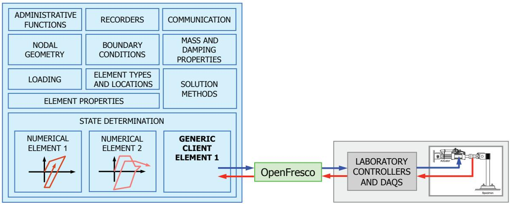
图 3.1 用户选择的有限元分析软件、OpenFresco中间件和实验室中的物理试件与控制及数据采集系统。
本章首先介绍基于对混合模拟期间执行的操作进行严格系统分析确定的软件框架的基本构建模块（抽象类）。还解释了这些类之间的交互以及底层面向对象软件设计模式。此后，讨论了多层软件架构的概念，该架构提供了与任何有限元软件交互并促进地理分布模拟的手段。接下来描述了分布式计算和测试所需的通信方法和协议。随后简要描述了可用对象（具体子类）的实现。最后，本章解释了如何将地震工程模拟开放系统（OpenSees）用作计算框架，以及这样做获得的优势。
3.2 OPENFRESCO软件架构
按照面向对象方法，开发过程的第一步是确定结构测试系统在功能上需要做什么以促进试验的执行。开发过程的第一阶段也称为面向对象分析（OOA），并产生软件框架的概念模型。上述三种目前成熟的试验方法（准静态测试、振动台测试和混合模拟）都在结构或其组件的界面自由度上施加边界条件并返回相应的工作共轭量。要施加的边界条件通常是规定的位移、牵引力或组合。在结构试验中，此类规定的边界条件通常通过传递系统施加，传递系统由作动器和测量装置组成。传递系统的设置方式及其与试件的物理连接是试验特定的，因此通常每次试验都会改变。最后，需要通过控制系统来命令作动器，并且需要通过数据采集系统来记录测量值。这些控制和数据采集系统通常因实验室而异。
因此，软件框架的主要要求是（1）提供某种手段来表示在实验室中物理测试的结构子组件；（2）为传递系统生成适当的（位移、速度、加速度、力）输入命令；（3）将测量的信号（位移、速度、加速度、力）转换回适合计算软件的形式；以及（4）提供与各种控制和数据采集系统交互的灵活性。此外，软件框架应提供（5）将进程分布到网络上不同机器的技术，从而实现地理分布模拟；（6）计算软件和实验室之间传输附加消息的手段；以及（7）使实时测试成为可能的执行和通信速度。
面向对象分析过程的下一步是通过将先前确定的需求分解为组件来生成面向对象模型（OOM）。这意味着在软件中生成现实世界对象的抽象。这些抽象组件（描述现实世界对象特征和行为的蓝图）称为软件类。使用封装，类向向其发送消息的其他对象隐藏其功能细节（数据和数据操作），从而为模块化、灵活和可扩展的软件提供基础。根据先前解释的执行混合模拟所需的组件和要求，引入以下软件抽象。
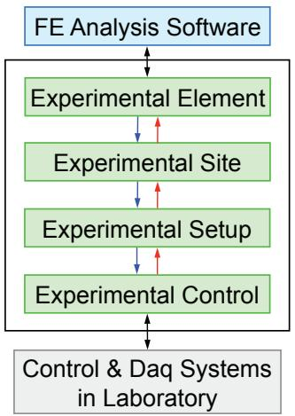
图 3.2 OpenFresco软件架构的抽象组件。
试验单元：ExperimentalElement:
先前描述的现实世界组件的第一个抽象是ExperimentalElement类。它表示在实验室中物理测试的桁架、梁、柱、支撑、弹簧、墙和结构的其他部分等试件。类似于分析单元，试验单元在宿主有限元分析软件中起作用，但代表模型的物理部分而不是数值部分。像分析单元一样，试验单元的基本功能是为给定的变形状态提供质量、阻尼和刚度矩阵以及残余力向量。因此，试验单元负责将规定的边界条件从有限元模型的全局坐标系转换为最适合测试的局部或基本单元坐标系。此外，它需要提供测量响应量（如位移、速度、加速度和力）从单元坐标系返回到有限元模型全局坐标系的逆变换。与分析单元相反，试验单元通常无法返回切线刚度矩阵，而需要返回其初始刚度矩阵。这是因为通常很难仅从基本或局部单元自由度处的试验测量响应量计算准确的单元切线刚度矩阵。此外，由于物理试件是真正依赖于历史的，因此一旦模拟正在进行，代表此类试件的试验单元就不能恢复到分析的先前或初始状态。ExperimentalElement类是一个抽象类，它定义了所有试验单元必须符合的接口。ExperimentalElement类的具体子类然后提供特定试验试件的实现。
试验场地：ExperimentalSite:
试验中涉及的其他现实世界组件是进行测试的实验室和进行分析的计算站点。ExperimentalSite类在软件框架中表示此类实验室和计算站点。由于在现实世界中，实验室和计算站点可以位于不同的地方，因此软件中的试验场地对象负责提供连接不同站点的方法，并存储从其他站点接收或需要发送到其他站点的数据。此外，试验场地应支持不同的通信协议，如TCP/IP、UDP或NHCP（NEES混合模拟控制协议），并能够使用TLS（传输层安全）或SSL（安全套接字层）等加密协议保证互联网上的安全事务。ExperimentalSite类是一个抽象基类，它定义了所有试验场地必须符合的接口。ExperimentalSite类的具体子类然后提供特定实验室和计算站点的实现。
试验设置：ExperimentalSetup:
第三个抽象是ExperimentalSetup类，该软件类负责表示实验室中构建的传递系统可能的配置。由于传递系统由作动器和测量装置组成，因此试验设置需要利用加载和仪器系统的几何和运动学，将规定的边界条件从试验单元的局部或基本自由度转换为传递系统的作动器自由度。类似地，由传感器和荷载传感器测量的工作共轭量需要转换回试验单元自由度。这些变换可以实现为简单的线性变换矩阵（小位移），也可以实现为考虑大位移效应的复杂代数变换。ExperimentalSetup类同样是一个抽象基类，它定义了所有试验设置必须符合的接口。ExperimentalSetup类的具体子类然后提供特定设置的实现。
试验控制：ExperimentalControl:
这里介绍的最后一个主要抽象是ExperimentalControl类。由于试验测试所需的任务之一是与各种控制和数据采集系统通信，因此ExperimentalControl类在软件框架中提供此类接口和功能。这种抽象和这些操作的封装的优势在于，ExperimentalSetup类将加载系统配置的细节与ExperimentalControl类分开。因此，负责控制和数据采集系统IT方面的人员只需关注ExperimentalControl类；而配置作动器和传感器的人员则专注于ExperimentalSetup类。与其他类一样，ExperimentalControl类同样是一个抽象基类，它定义了所有试验控制必须符合的接口。ExperimentalControl类的具体子类然后提供与不同控制和数据采集系统特定接口的实现。
3.3 多层软件架构
虽然上一节描述的组件构成了软件框架的核心，但它们没有提供以模块化和灵活的方式利用OpenFresco与用户选择的任何有限元分析软件的途径。为实现这一目标，引入了三层和多层软件架构。它们都属于客户端/服务器架构类，基于在不同软件代理之间传递消息。三层软件架构围绕OpenFresco核心模块包装，并提供与各种有限元软件客户端和控制及数据采集系统接口所需的功能。
顾名思义，软件分为三层，由客户端、中间层（或应用）服务器和后端服务器组成。中间层服务器位于用户界面（客户端）和数据管理（服务器）组件之间。在传统的三层架构中，此中间层提供执行业务逻辑和规则的功能流程管理。通常在需要分布式客户端/服务器设计时使用三层架构，该设计提供增强的性能、灵活性、可维护性、可重用性和可扩展性，同时向用户隐藏分布式处理的复杂性（Carnegie Mellon SEI）。
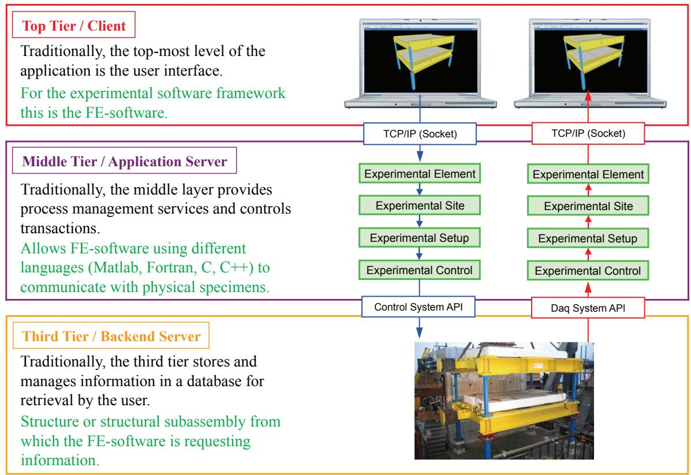
图 3.3 多层软件架构。
从图3.3可以看出，在试验软件框架的情况下，有限元分析软件类似于客户端或用户界面的顶层，在其中创建结构模型然后进行分析。后端服务器（也称为第三层）是由不同控制和数据采集系统及其API组成的实验室服务器。这意味着与通用三层架构相比，其中第三层通常是用户查询信息的数据库，实验室服务器可以被视为有限元分析软件查询信息的结构或结构子组件。最后，中间层服务器（也称为模拟应用服务器）提供流程管理服务和数据转换，以便不同的计算客户端可以查询结构不同试验部分的信息。它通过集中化流程逻辑来提高性能、灵活性、可维护性、可重用性和可扩展性。集中化的流程逻辑通过将系统功能本地化来简化管理和变更管理，因此只需编写一次变更并将其放在中间层服务器上即可在整个系统中使用（Carnegie Mellon SEI）。此外，由于中间层服务器提供的这种分离，可以容纳用不同语言（如Matlab、Fortran、C、\(\mathrm { C } { + + }\)等）编写的有限元分析软件。如果中间层服务器进一步分为两个或多个单元，则该设计称为多层或n层架构，这是架构软件模式之一。正如很快将看到的，对于地理分布模拟，OpenFresco采用具有两个中间层服务器单元的四层架构。
由于多层架构与OpenFresco中间层组件的模块化和灵活性相结合，可以实现各种本地和地理分布的试验配置。对于所有这些配置，客户端和第一个中间层服务器单元通常在同一台机器上运行。然而，由于使用TCP/IP套接字来实现两者之间的进程间通信，如果需要，客户端和第一个模拟应用服务器单元也可以在两台单独的机器上运行。另一方面，两个模拟应用服务器软件代理之间的通信始终是分布式的，这意味着进程在两台不同的机器上运行。这些网络通信由先前描述的ExperimentalSite类管理，该类又依赖于OpenSees Channel类。OpenSees Channel类然后可以使用不同的通信协议，如TCP/IP、UDP或NHCP。
在OpenFresco的本地部署情况下，意味着所有进程都在一个实验室中本地执行，有两种可能的配置可用，如图3.4所示。在第一种配置中（更通用的配置），必须向用于分析的有限元软件添加通用客户端单元。通用客户端单元只需要节点数、连接的自由度以及通信端口作为输入参数。此外，它可以用相应有限元分析软件的语言实现。因此，与OpenFresco中间件的数据交换通过通用客户端单元进行，该单元由用户嵌入到每个有限元分析程序中，使用其发布的编程接口（例如，用户定义单元）。利用OpenFresco软件框架提供的套接字，此类用户定义单元通过TCP/IP连接与模拟应用单元服务器通信。由于在有限元分析软件中使用通用单元，模拟应用单元服务器随后与OpenFresco试验单元类接口。第一种配置的优势在于，只需向有限元分析软件添加一个单元（通用客户端单元），并且可以使用OpenFresco软件框架中所有现有的试验单元来表示结构的试验部分。
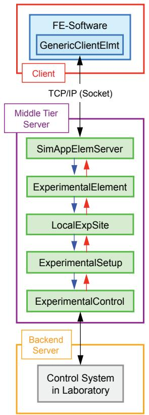
图 3.4a 本地部署的三层配置。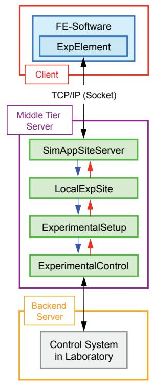
图 3.4 本地部署的三层配置。
图3.4中的第二种配置中，将试验单元而不是通用客户端单元直接添加到有限元分析软件中。然后，该试验单元与OpenFresco软件框架中的模拟应用站点服务器通信，后者又与本地试验站点而不是试验单元接口。第二种配置的优势在于，如果需要非常专门的试验单元，而该单元在OpenFresco中不可用且无法添加到OpenFresco中（因为它利用仅在有限元分析软件中可用的某些资源），则此类试验单元可以直接添加到计算软件客户端中。
从图3.5可以看出，在OpenFresco的分布式部署情况下，有两种非常相似的可能配置。它们的主要区别在于中间层服务器分为分布在网络上的两个单元。Shadow和Actor试验站点（ExperimentalSite基类的具体子类）管理两层之间的通信。如前所述，它们利用OpenSees Channel类，因此可以采用不同的协议（如TCP/IP、带SSL的TCP/IP、UDP或NHCP）进行通信。
图 3.5a 网络部署的四层配置。
图 3.5 网络部署的四层配置。
由于中间层服务器分为两个单元，负责在单元和作动器自由度之间转换的ExperimentalSetup类可以位于第一个中间层服务器单元上（通常在与有限元分析客户端相同的机器上运行）或第二个中间层服务器单元上（通常在实验室中运行），但不能同时在两侧。向用户提供这种灵活性的目的是适应有限元分析师对混合模拟的看法以及试验人员的看法。前者通常对拥有一些返回给定试响应抗力的有限元单元感兴趣，而无需处理实验室中的试验设置。在这种情况下，试验设置可以放在实验室侧。另一方面，后者通常更喜欢直接在控制和数据采集系统自由度中接收命令和返回测量值，而无需从单元自由度转换和转换到单元自由度。在这种情况下，试验设置可以方便地放在计算客户端侧。因此，总结一下，OpenFresco的三层和四层架构模式提供了将一台或多台机器上运行的任何计算代理与一个或多个实验室中物理测试的试件接口的模块化和灵活性。
3.4 面向对象设计细节
在面向对象方法的下一步中，面向对象设计（OOD）阶段定义了对象的接口以及它们之间的交互。设计阶段的基础是概念模型以及在前几小节中开发的软件框架的所有可能配置（用例）。图3.6显示了使用统一建模语言（UML）简化图形表示法的OpenFresco软件框架的类图（Booch等人2005）。类在图形上由一个矩形表示，矩形内部有类的名称。对于抽象类，名称以斜体显示。此处呈现的图中省略了类的属性和操作，并随后单独解释。以下四种类型的线表示类之间的关系：
依赖是一种关系，说明一个类使用另一个类的操作、变量或参数。这种关系有时也称为"使用"关系。
泛化是父类（超类或基类）与子类（子类或派生类）之间的关系。这种关系也称为继承或称为"是"关系。子类从其父类继承属性（如属性和操作）。
关联是一种结构关系，指定一个类的对象连接到另一个类的对象。这种关系也称为"知道"关系。
聚合是一种特殊的关联关系，指定一个类的对象由其他类的对象组成。这种关系也称为"有"关系。
关联或聚合的多重性指定一个实例可以连接多少个对象。它以整数范围的形式编写，包含最小值和最大值，并显示在关联或聚合的末端。
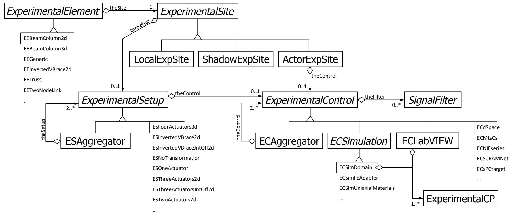
图 3.6 OpenFresco软件框架的类图。
试验单元：ExperimentalElement:
从图3.6中的类图可以看出，ExperimentalElement类是一个抽象类，它从Element类继承属性和操作，Element类是OpenSees中的抽象基类。
class ExperimentalElement : public Element
{
public:
// 构造函数
ExperimentalElement(int tag, int classTag,
ExperimentalSite *site = 0);
// 析构函数
virtual ~ExperimentalElement();
// 纯虚函数：获取基础自由度数量
virtual int getNumBasicDOF() = 0;
// 纯虚函数：设置初始刚度
virtual int setInitialStiff(const Matrix& stiff) = 0;
// 获取切线刚度矩阵
virtual const Matrix &getTangentStiff();
// 获取初始刚度矩阵
virtual const Matrix &getInitialStiff();
// 获取位移响应
virtual const Vector &getDisp();
// 获取速度响应
virtual const Vector &getVel();
// 获取加速度响应
virtual const Vector &getAccel();
// 获取时间响应
virtual const Vector &getTime();
protected:
// 试验站点指针
ExperimentalSite *theSite;
// 控制尺寸
ID *sizeCtrl;
// 采集尺寸
ID *sizeDaq;
// 初始刚度矩阵
Matrix theInitStiff;
private:
// 回滚到上一次提交状态
int revertToLastCommit();
// 回滚到初始状态
int revertToStart();
// 首次警告标志
bool firstWarning;
};
图 3.7 ExperimentalElement类的接口。
试验单元的实现，如桁架、梁、柱、支撑、弹簧等，在ExperimentalElement类的具体子类中提供。类接口如图3.7所示，与其父Element类相比，提供了以下修改和附加功能。首先，也是最重要的，ExperimentalElement类与抽象ExperimentalSite类相关联。更具体地说，这两个类之间的关系是聚合，意味着一个试验单元有一个试验场地。此外，为设置试验单元的初始刚度矩阵和获取测量响应量的几种方法已添加到接口中。ExperimentalElement接口中定义的大多数方法是纯虚方法，意味着具体子类需要提供实现。最后，由于物理试件是真正依赖于历史的，并且代表此类试件的试验单元不能恢复到分析的先前或初始状态，因此两个继承的方法revertToLastCommit()和revertToStart()返回错误消息并中断模拟。
试验场地：ExperimentalSite:
重新设计的ExperimentalSite类是一个抽象基类，其接口定义如图3.8所示。它有三个派生类，为本地和地理分布模拟提供必要的具体实现。LocalExpSite类用于本地测试，ShadowExpSite和ActorExpSite类作为一对用于分布式测试。就客户端-服务器架构中通常使用的术语而言，ShadowExpSite提供客户端的实现，ActorExpSite提供服务器的实现。
class ExperimentalSite : public TaggedObject {
public:
// constructors and destructor
ExperimentalSite(int tag,
ExperimentalSetup *setup = 0);
ExperimentalSite(const ExperimentalSite &site);
virtual ~ExperimentalSite();
virtual int setSize(ID sizeT, ID sizeO);
virtual int setup() = 0;
// public methods to set and to get responses
virtual int setTrialResponse(const Vector* disp,
const Vector* vel,
const Vector* accel,
const Vector* force,
const Vector* time);
virtual int setTrialDisp(const Vector* disp);
virtual int getDaqResponse(Vector* disp,
Vector* vel,
Vector* accel,
Vector* force,
Vector* time);
virtual int setDaqResponse(const Vector* disp,
const Vector* vel,
const Vector* accel,
const Vector* force,
const Vector* time);
virtual int checkDaqResponse() = 0;
virtual const Vector& getTrialDisp();
virtual const Vector& getTrialVel();
virtual const Vector& getTrialAccel();
virtual const Vector& getTrialForce();
virtual const Vector& getTrialTime();
virtual const Vector& getDisp();
virtual const Vector& getVel();
virtual const Vector& getAccel();
virtual const Vector& getForce();
virtual const Vector& getTime();
virtual int commitState();
virtual ExperimentalSite *getCopy() = 0;
virtual int getTrialSize(int rType);
virtual int getOutSize(int rType);
virtual int getCtrlSize(int rType);
virtual int getDaqSize(int rType);
protected:
...
};
图 3.8 ExperimentalSite类的接口。
ShadowExpSite和ActorExpSite应支持不同的通信协议，如TCP/IP、UDP或NHCP（NEES混合模拟控制协议），并能够使用TLS（传输层安全）或SSL（安全套接字层）等加密协议保证互联网上的安全事务。由于OpenSees中开发的分布式计算模型提供了大部分这些要求，因此ShadowExpSite和ActorExpSite类分别从该模型的Shadow和Actor类派生。Shadow和Actor类都与OpenSees Channel类相关联，Channel类是一个抽象基类，具有实现不同通信协议的具体子类。对分布式测试有用的可用子类是TCP_Socket、UDP_Socket和TCP_SocketSSL。
试验设置：ExperimentalSetup:
重新设计的ExperimentalSetup抽象基类的接口定义如图3.9所示。与其他抽象类类似，ExperimentalSetup类中的大多数方法都是纯虚方法，具体子类提供不同试验设置的实现。如前所述，Bridge软件模式用于ExperimentalSetup类与关联的ExperimentalControl类之间。此外，类接口提供了在ExperimentalSite和ExperimentalControl类处设置和获取试和数据采集响应量的方法。
将规定的边界条件从试验单元的局部或基本自由度转换为传递系统的作动器自由度的第一个核心任务由公共transfTrialResponse()方法执行。类似地，将传感器和荷载传感器测量的工作共轭量转换回试验单元自由度的第二个核心任务由公共transfDaqResponse()方法执行。这两种方法然后调用具体子类中的一系列私有方法，依次转换每个单独的响应量。剩余的公共方法用于设置因子，这些因子用于修改控制和数据采集值，以考虑单位转换和相似变换。
class ExperimentalSetup : public TaggedObject {
public:
// constructors and destructor
ExperimentalSetup(int tag,
ExperimentalControl* control = 0);
ExperimentalSetup(const ExperimentalSetup& es);
virtual ~ExperimentalSetup();
virtual int setSize(ID sizeT, ID sizeO) = 0;
virtual int setup() = 0;
virtual int setCtrlDaqSize();
// public methods to set and to obtain responses
virtual int setTrialResponse(const Vector* disp,
const Vector* vel,
const Vector* accel,
const Vector* force,
const Vector* time);
virtual int getTrialResponse(Vector* disp,
Vector* vel,
Vector* accel,
Vector* force,
Vector* time);
virtual int setDaqResponse(const Vector* disp,
const Vector* vel,
const Vector* accel,
const Vector* force,
const Vector* time);
virtual int getDaqResponse(Vector* disp,
Vector* vel,
Vector* accel,
Vector* force,
Vector* time);
// public methods to transform the responses
virtual int transfTrialResponse(const Vector* disp,
const Vector* vel,
const Vector* accel,
const Vector* force,
const Vector* time);
virtual int transfDaqResponse(Vector* disp,
Vector* vel,
Vector* accel,
Vector* force,
Vector* time);
virtual int commitState();
virtual ExperimentalSetup *getCopy() = 0;
// public methods to set the control and daq factors
void setCtrlDispFactor(const Vector& f);
void setCtrlVelFactor(const Vector& f);
void setCtrlAccelFactor(const Vector& f);
void setCtrlForceFactor(const Vector& f);
void setCtrlTimeFactor(const Vector& f);
void setDaqDispFactor(const Vector& f);
void setDaqVelFactor(const Vector& f);
void setDaqAccelFactor(const Vector& f);
void setDaqForceFactor(const Vector& f);
void setDaqTimeFactor(const Vector& f);
virtual ID getCtrlSize();
virtual ID getDaqSize();
virtual int getCtrlSize(int rType);
virtual int getDaqSize(int rType);
protected:
...
};
图 3.9 ExperimentalSetup类的接口。
从图3.6可以看出，试验设置层次结构提供了一个ESAggregator子类，该子类与其自己的ExperimentalSetup父类相关联。这允许将两个或多个具体试验设置聚合到单个试验设置中，然后与ExperimentalSite和ExperimentalControl对象交互。这种结构模式称为Composite模式，它为ExperimentalSite类提供了将单个试验设置和试验设置组合统一处理的能力（Gamma等人1995）。
试验控制：ExperimentalControl:
重新设计的ExperimentalControl类是一个抽象基类，其接口定义如图3.10所示。同样，抽象类接口中的大多数方法都定义为纯虚方法，具体子类负责提供实现。依赖于所有响应量的公共setTrialResponse()和getDaqResponse()方法调用受保护的control()和acquire()方法。受保护的方法然后利用控制和数据采集系统的应用程序编程接口（API）来与这些系统交互。这种方法提供了仅使用和返回特定API支持的响应量的灵活性。
与ExperimentalSetup层次结构类似，Composite软件模式再次用于提供ECAggregator子类，该子类允许将两个或多个试验控制对象聚合为一个复合对象。这使软件框架能够利用一个接口来控制作动器，同时利用第二个接口进行数据采集。
为了分析建模控制和数据采集系统，从而提供在实际试验执行之前模拟试验测试的软件功能，将ECSimulation类添加到层次结构中。这对于检查混合模型和估计结构在实际试验运行之前的响应特别有用。此外，ECSimFEAdapter子类提供了通过不同的有限元分析软件模拟结构部分的能力。这种耦合有限元分析软件的能力提供了比单个程序可能实现的更大的灵活性和更大的现实性来模拟大型工程系统。从图3.6可以看出，ECSimulation类是一个从ExperimentalControl类派生的抽象类。此外，ExperimentalControl类与抽象SignalFilter类相关联，该类可用于过滤测量信号或模拟试验误差。最后，ExperimentalCP类用于定义控制点，某些具体试验控制子类需要这些控制点。控制点是用于向控制系统发送命令信号或从数据采集系统获取反馈信号的一个或多个方向（自由度）的逻辑容器。
class ExperimentalControl : public TaggedObject {
public:
// constructors and destructor
ExperimentalControl(int tag);
ExperimentalControl(const ExperimentalControl& ec);
virtual ~ExperimentalControl();
virtual int setSize(ID sizeT, ID sizeO) = 0;
virtual int setup() = 0;
// public methods to set and to get response
virtual int setTrialResponse(const Vector* disp,
const Vector* vel,
const Vector* accel,
const Vector* force,
const Vector* time) = 0;
virtual int getDaqResponse(Vector* disp,
Vector* vel,
Vector* accel,
Vector* force,
Vector* time) = 0;
virtual int commitState();
virtual ExperimentalControl *getCopy() = 0;
const ID& getSizeCtrl();
const ID& getSizeDaq();
protected:
// protected methods to set and to get response
virtual int control() = 0;
virtual int acquire() = 0;
// size of ctrl/daq data
// [0]:disp, [1]:vel, [2]:accel, [3]:force, [4]:time
ID *sizeCtrl;
ID *sizeDaq;
// signal filter
SignalFilter *theFilter;
};
图 3.10 ExperimentalControl类的接口。
交互和坐标变换：InteractionsandTransformations:
OpenFresco模块之间的数据流以及此类模块内数据的转换通过图3.11所示的二维梁柱示例进行说明。数据流使用以下术语：从有限元分析软件流向实验室的数据称为（1）"试数据"（如果进入对象/类）或（2）"控制数据"（如果离开对象/类）；从实验室流向有限元分析软件的数据称为（3）"采集数据"（如果进入对象/类）或（4）"输出数据"（如果离开对象/类）。
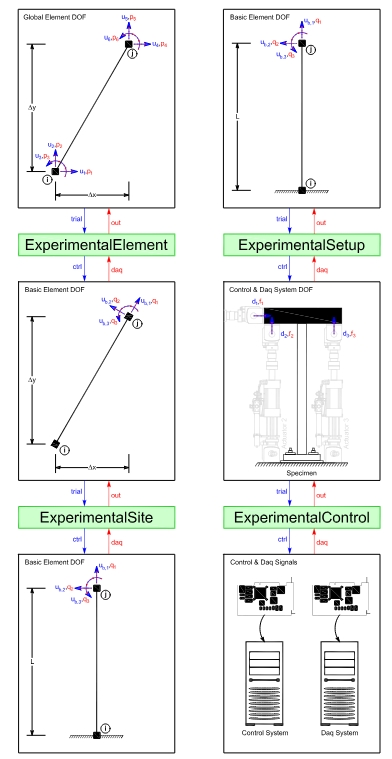
图 3.11 梁柱示例的数据流和转换。
从图3.11的第一张图可以看出，二维梁柱单元共有六个全局自由度，其中u是全局单元位移，p是全局单元力。然后，ExperimentalElement将这些全局试位移转换为悬臂基本坐标系中的控制位移（分别为变形），\({ \bf u _ { \mathrm { b } } }\)。下一个模块ExperimentalSite存储试数据，在分布式试验的情况下，重新组织此类数据以促进跨网络更有效的传输。接下来，三个基本试位移/变形，\({ \bf u _ { \mathrm { b } } }\)，由ExperimentalSetup对象转换为作动器控制位移d。最后，ExperimentalControl模块将作动器试位移转换为适合所采用实验室控制系统的控制信号。在返回路径上，数据采集系统测量的力信号由ExperimentalControl对象转换为输出力向量。之后，ExperimentalSetup模块将这些力f从荷载传感器（分别为数据采集系统）自由度转换为基本单元力q。在分布式模拟的情况下，数据再次被重组为促进更高效网络事务的结构，随后由ExperimentalSite对象存储以供重复检索，避免进一步的网络通信。最后，ExperimentalElement将采集力q从悬臂基本坐标系转换为全局单元力p，计算代码使用这些力来组装全局抗力向量。
本地和分布式模拟的序列图：
下面显示的交互图使用统一建模语言（UML）来说明发送到对象和从对象接收的消息序列。
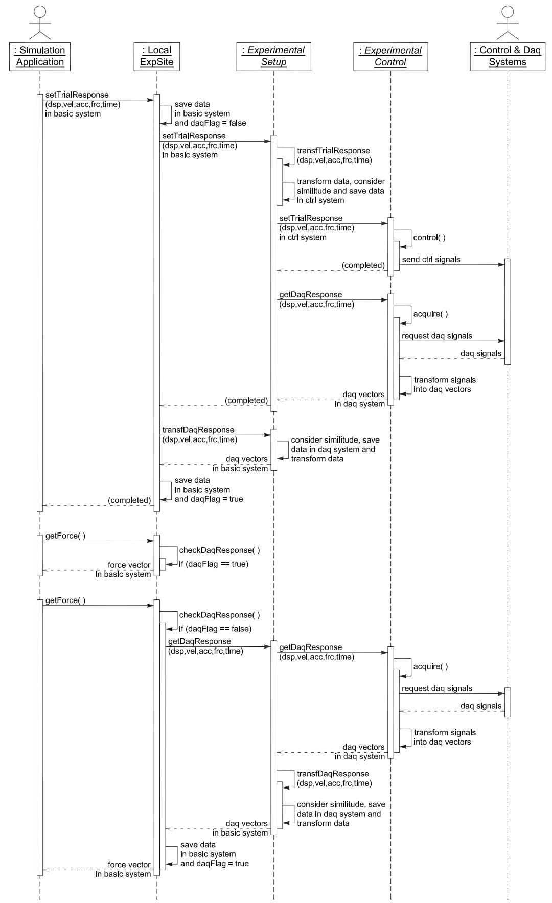
图 3.12 本地部署的OpenFresco序列图。
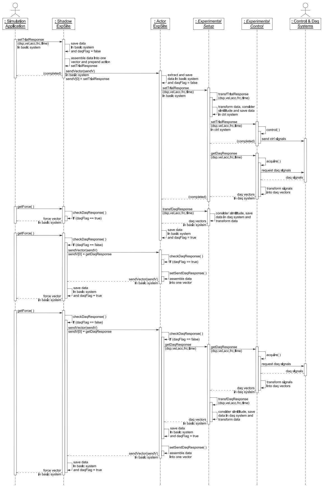
图 3.13 试验设置在实验室侧的分布式部署的OpenFresco序列图。
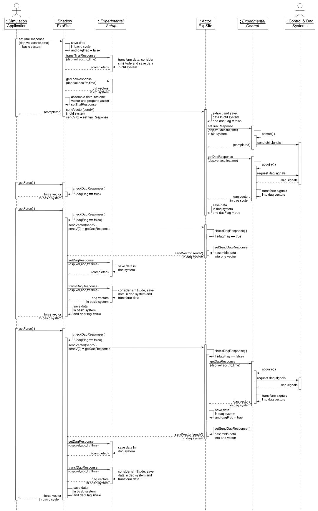
图 3.14 试验设置在计算客户端侧的分布式部署的OpenFresco序列图。
3.5 具体子类
下面解释当前实现和可用的具体子类。这些具体OpenFresco类的库实现了以下两个重要目标：（1）它们为领域研究人员提供了无需太多努力即可开始使用软件框架的机会，以及（2）它们为开发人员共享实现提供了方便的起点。现有的具体子类可以作为在实现OpenFresco软件框架的新具体对象时的模板。为了简化软件框架的使用，已使用Tcl脚本语言（Tcl Developer Xchange）实现了解释器。OpenFresco解释器通过添加用于建模（使用节点和单元）以及生成站点、设置和控制对象实例的命令来扩展Tcl解释器。应该理解，通过适当实现ExperimentalElement、ExperimentalSite、ExperimentalSetup和ExperimentalControl对象，整体混合结构的部分可以使用不同有限元分析软件包的特殊能力进行数值建模和模拟。
3.5.1 试验单元
桁架：Truss:
试验桁架单元有一个轴向自由度，由两个节点定义，可用于一维、二维和三维问题。
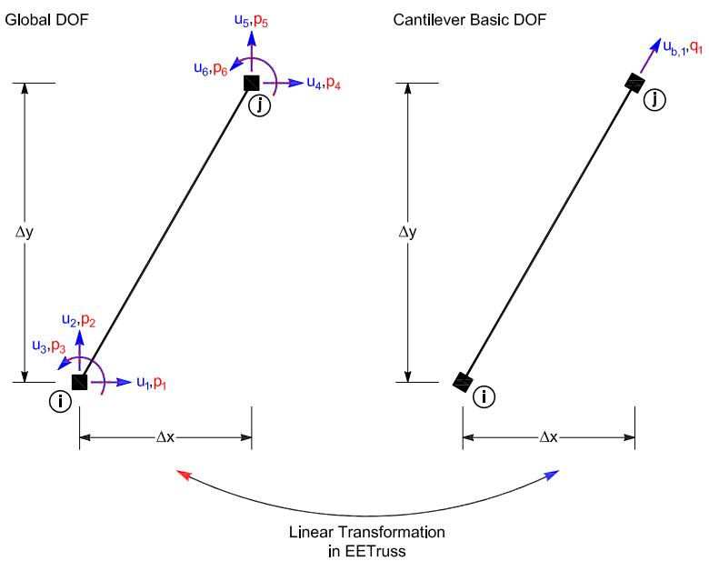
图 3.15 试验桁架单元（EETruss）。
从全局坐标系中的6个或12个自由度到悬臂基本坐标系中的一个轴向自由度的试位移和抗力变换被视为线性几何变换，并在EETruss类中实现。从图3.15可以看出，对于试验桁架单元，控制位移的自由度（蓝色）和获取抗力的自由度（红色）是共置的。
梁柱：Beam-Column
根据问题的维度（二维或三维），试验梁柱单元公式基于悬臂基本系统的3个或6个共置自由度。必要的位移、速度、加速度和力的变换分别在二维和三维情况下在EEBeamColumn2d类和EEBeamColumn3d类中实现。
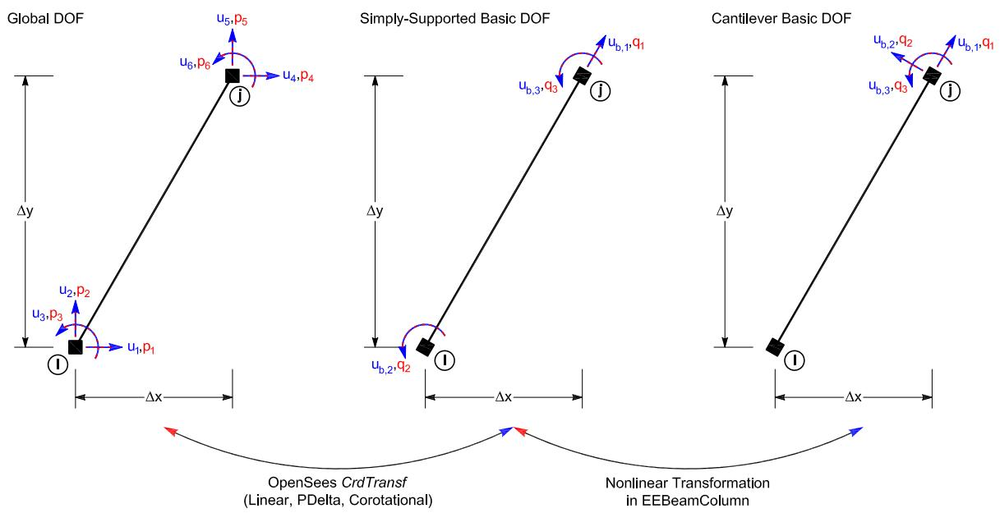
图 3.16 试验梁柱单元（EEBeamColumn2d）。
试验单元利用OpenSees CrdTransf类将响应量从全局自由度转换为简支基本单元自由度并返回。CrdTransf类是一个抽象基类，具有用于线性、p-delta和共旋几何变换的具体子类。框架单元坐标变换的这种抽象和封装有助于在不同线性和非线性坐标变换之间切换，而不会影响框架单元本身的实现。由于简支基本系统不适合试验测试（由于两个转动自由度），因此将响应量从简支转换为悬臂基本系统并返回。这些额外的非线性变换直接在EEBeamColumn类中实现。
从基本系统A（简支）到基本系统B（悬臂）的试位移的非线性变换由以下表达式给出。
其中\(L _ { \mathfrak { n } }\)是变形构型中单元的长度。试速度和试加速度的非线性变换可以通过对时间取方程（3.1）的导数来确定。表达式可以很容易地用任何计算机代数系统（CAS）如Mathematica（Wolfram）或Maple（Maplesoft）进行评估，但会变得相当复杂，因此此处未显示。
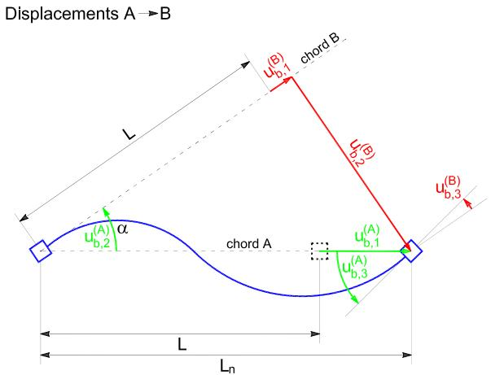
图 3.17 从基本系统A到B的非线性变换。
从基本系统B到基本系统A的测量位移的逆变换采用以下形式。
其中\(L _ { \mathfrak { n } }\)是变形构型中单元的长度，\(\alpha\)是从弦B到弦A的角度。最后，测量力从基本系统B到基本系统A的变换如下。
其中弦旋转\(\alpha\)由与（3.2）中相同的公式给出，测量位移替换为试位移以减少试验误差的影响。
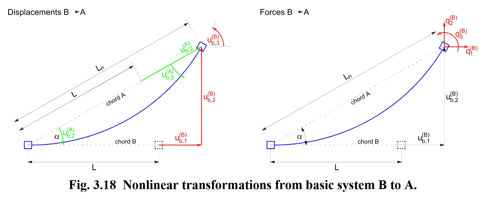
图 3.18 从基本系统B到A的非线性变换。
两节点连接：Two-NodeLink:
试验两节点连接单元由两个节点定义，可用于一维、二维和三维问题。该单元可以有1到6个彼此解耦的基本自由度。重要的是要注意，该单元不考虑从给定节点坐标推断的几何形状，而是利用用户指定的局部方向向量来确定弹簧的方向。该单元非常适合测试塑性铰和其他可以通过一系列解耦弹簧建模的配置。从全局自由度到1到6个基本自由度的试位移和抗力变换被视为线性几何变换，并在EETwoNodeLink类中实现。从图3.19可以看出，控制位移的自由度（蓝色）和获取抗力的自由度（红色）是共置的。
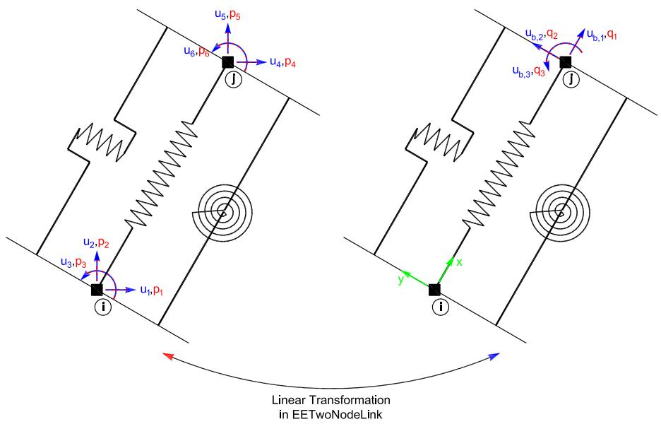
图 3.19 试验两节点连接单元（EETwoNodeLink）。通用：Generic:
通用试验单元由任意数量的节点和这些节点处的任意数量的全局自由度定义。每个节点的自由度数显然必须在1到ndf（问题的最大自由度数）之间。因此，该单元可用于一维、二维和三维问题。
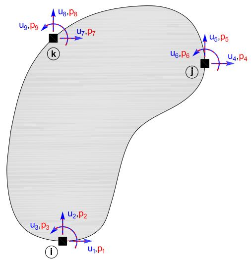
图 3.20 通用试验单元（EEGeneric）。
由于控制和数据采集自由度已经在全局坐标系中，因此EEGeneric类不像其他试验单元子类那样执行响应量的任何变换。相反，它在适当的自由度处提取试响应量进行控制，并从相应自由度处的采集信号组装测量响应量。从图3.20可以看出，控制位移的自由度（蓝色）和获取抗力的自由度（红色）是共置的。该试验单元对于表示任何通用试件或整个结构的较大子组件（只要没有特定试验单元存在）非常有用，只要可以将作动器连接到此类自由度以正确控制它们。此外，只要单个单元不需要专门的建模技术，它也可以用于使用单个单元表示多个试验单元。
倒V支撑：Inverted-VBrace:
试验倒V支撑单元由三个节点定义，可用于二维问题。
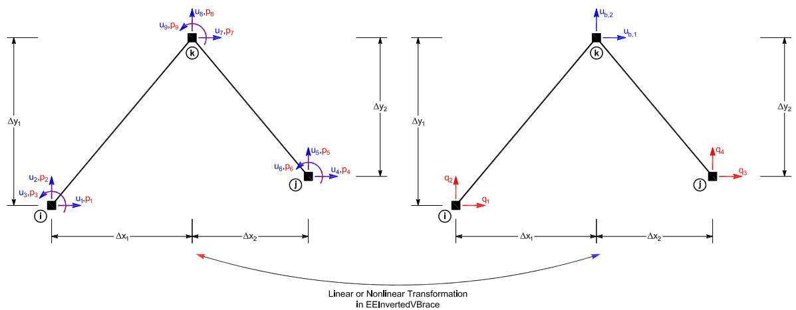
图 3.21 试验倒V支撑单元（EEInvertedVBrace2d）。
假设两个支撑在其端部铰接，这意味着忽略节点转动并将力矩设为零。从图3.21可以看出，试验单元的变形由支撑交叉点k处的两个平动自由度控制。然而，为了正确捕捉倒V支撑子组件的屈曲行为，抗力由支撑支撑i和j处的两个荷载传感器获取，然后根据单元平衡计算k处的力。与前面讨论的试验单元相比，倒V支撑单元的控制和数据采集自由度因此不再共置。从全局自由度到基本自由度的试位移的线性变换采用以下形式。
从两个荷载传感器测量的力到全局自由度的变换考虑了荷载传感器轴向和剪力通道之间的串扰效应。这导致在EEInvertedVBrace2d类中实现的以下表达式。
有关该试验单元的理论、非线性变换和几个应用示例的更深入描述，读者可参考（Yang 2006）。
3.5.2 试验场地
本地：Local:
顾名思义，LocalExpSite类用于单个实验室的本地测试。这意味着计算分析和试验测试在同一地点进行。由于此类试验不需要广域网通信，因此LocalExpSite类仅传递消息并存储试和输出数据。即使LocalExpSite因此可以被视为虚拟场地，但它仍然是必需的，以便以统一的方式处理本地和地理分布的场地。
影子和参与者：ShadowandActor:
ShadowExpSite和ActorExpSite形成了地理分布计算和试验站点所需的客户端-服务器架构。运行OpenFresco核心组件的中间层服务器因此被进一步拆分为第二层和第三层。由于这种跨网络的进程分布与OpenSees中的分布式计算模型非常相似，因此利用该模型中的几个抽象和具体类来建模所需的行为。
从图3.22可以看出，代表客户端的ShadowExpSite从其Shadow基类继承其属性，而作为服务器的ActorExpSite从其Actor基类继承其属性。Shadow和Actor父类都与抽象Channel基类相关联。
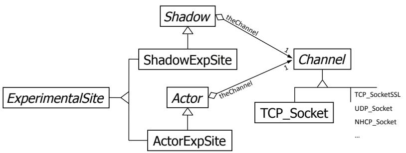
图 3.22 客户端-服务器架构的类图。
此类Channel对象提供客户端和服务器进程之间的通信方法。Channel类的具体子类负责实现不同的通信协议。TCP_SocketSSL子类已添加到OpenSees现有可用通信协议中。这个新类利用经过行业测试的开源OpenSSL技术来加密和解密通过TCP/IP网络发送的数据。客户端和服务器在初始握手期间都经过验证，因此需要私钥和安全证书。因此，TCP_SocketSSL类提供了安全地理分布测试的手段，而加密/解密过程仅略微降低了通信速度。此外，为了使地理分布测试尽可能高效，ShadowExpSite和ActorExpSite将请求标识和所有数据组装成单个消息。这显著减少了每个计算步骤所需的网络事务数量，从而提高了性能。
3.5.3 试验设置
无变换：NoTransformation:
顾名思义，ESNoTransformation类是一个虚拟试验设置，不执行从基本单元自由度到作动器自由度的任何变换。但是，它允许重新排序自由度而不对其进行变换。如果试验控制和数据采集系统直接执行所有必要的变换，意味着不需要在试验设置对象中实现额外的变换，则应采用此试验设置。
单作动器：OneActuator:
ESOneActuator试验设置可用于控制试验单元的任何基本自由度。ESOneActuator对象的控制和数据采集自由度是共置的。由于此设置只有一个作动器，因此没有任何响应量被变换。
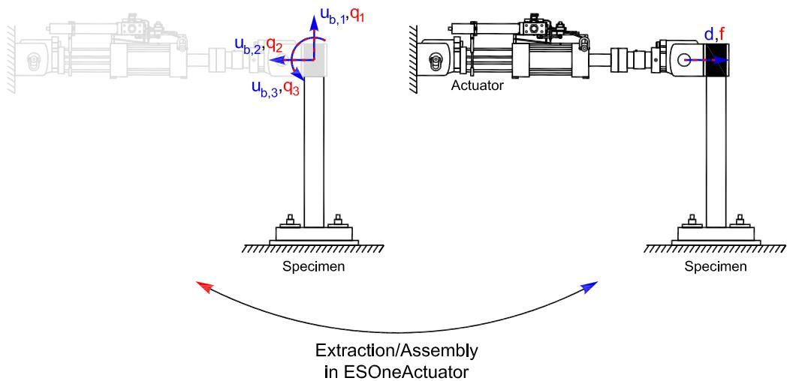
图 3.23 单作动器试验设置（ESOneActuator）。
相反，ESOneActuator类在用户指定的自由度处提取试响应量进行控制，并从相应自由度处的采集信号组装测量响应量。图3.23显示了一个试验梁柱单元，其中作动器设置为控制单元的基本自由度2。
双作动器：TwoActuators:
从图3.24可以看出，ESTwoActuators2d试验设置配置由两个通过刚性连杆连接的平行作动器组成，以控制试验单元的平动和转动自由度。
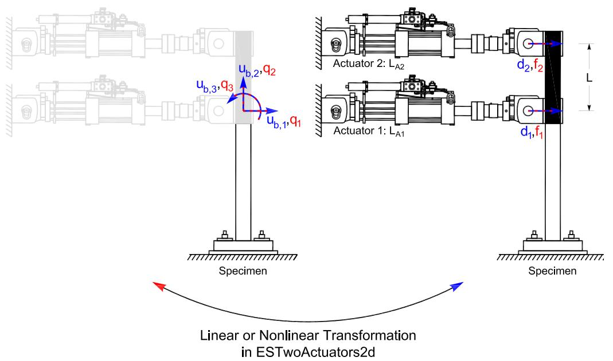
图 3.24 双作动器试验设置（ESTwoActuators2d）。
从单元自由度到作动器自由度并返回的所有响应量的变换可以实现为简单的线性几何变换，也可以实现为考虑大位移效应的复杂非线性几何变换。为了演示实现过程，下面总结了ESTwoActuators2d子类的线性和非线性变换。所有其他具体试验设置子类的实现遵循类似的方法。试位移的线性（3.6）和非线性（3.7）变换采用以下形式。
其中\(L\)是刚性连杆的长度，\(L _ { _ { A 1 } }\)是第一作动器的初始长度。虽然试速度和试加速度的线性变换具有与（3.6）相同的形式，但非线性变换可以通过对时间取方程（3.7）的导数来确定。表达式可以很容易地用任何计算机代数系统（CAS）如Mathematica（Wolfram）或Maple（Maplesoft）进行评估，但会变得太复杂，因此此处未显示。接下来显示了由数据采集系统测量的位移逆变换回试验单元基本位移的线性和非线性情况。
最后，力变换的线性和非线性情况（从数据采集自由度返回到单元基本自由度）表示如下。
对于非线性力变换（3.11）中必要的位移\(u _ { b , 3 }\)和\(d _ { 2 }\)，可以使用来自（3.7）的试值或来自（3.9）的测量值。然而，为了减少试验误差的影响，利用试位移值通常是有利的。
三作动器：ThreeActuators:
ESThreeActuators2d试验设置可用于控制试验单元的两个平动和转动自由度。从图3.25可以看出，ESThreeActuators2d对象的控制和数据采集自由度是共置的。该设置包括一个连接到试件的刚性加载梁、一个水平和两个垂直的平行作动器。三个作动器的长度为\(L _ { _ { A 1 } }\)、\(L _ { _ { A 2 } }\)、\(L _ { _ { A 3 } }\)，刚性加载梁的两部分长度为\(L _ { 1 }\)和\(L _ { 2 }\)。与ESTwoActuators2d子类一样，从单元自由度到作动器自由度并返回的所有响应量的变换已实现为简单的线性几何变换和考虑大位移效应的复杂非线性几何变换。但是，此处未显示公式，因为它们会变得相当复杂。
还实现并提供了非常类似的ESThreeActuatorsJntOff2d子类，该子类考虑了作动器叉形铰链和加载梁之间的刚性节点偏移。
图 3.25 三作动器试验设置（ESThreeActuators2d）。

倒V支撑：Inverted-VBrace:
ESInvertedVBrace2d试验设置是专门为悬挂拉链框架项目开发的（Yang 2006）。该设置具有与ESThreeActuators2d设置相同的加载配置，即利用刚性梁和三个作动器来控制两个平动和一个转动自由度。然而，为了捕捉两个支撑的屈曲行为，力由支撑支撑处的两个VPM荷载传感器获取，而不是在作动器自由度处。这意味着与前面讨论的试验设置相比，控制和数据采集自由度在此处不再共置。三个作动器的长度为\(L _ { _ { A 1 } }\)、\(L _ { _ { A 2 } }\)、\(L _ { _ { A 3 } }\)，刚性加载梁的两部分长度为\(L _ { \mathrm { 1 } }\)和\(L _ { 2 }\)。与其他试验设置子类一样，从单元自由度到作动器自由度并返回的所有响应量的变换已实现为简单的线性几何变换和考虑大位移效应的复杂非线性几何变换。有关此类变换的更详细描述，感兴趣的读者可参考Yang（2006）。
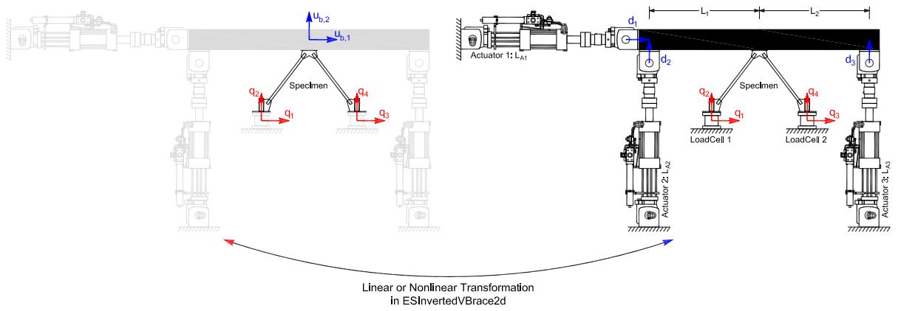
图 3.26 倒V支撑试验设置（ESInvertedVBrace2d）。
还实现并因此提供了非常类似的ESInvertedVBraceJntOff2d子类，该子类考虑了作动器叉形铰链和加载梁之间的刚性节点偏移。
聚合器：Aggregator:
如前所述，ESAggregator子类与其自己的ExperimentalSetup父类相关联。这允许将两个或多个具体试验设置聚合到单个试验设置中，然后与ExperimentalSite和ExperimentalControl对象交互。通过这种方式，复杂的试验测试配置可以由较小现有试验设置对象的聚合来表示，这意味着对于由现有具体试验设置子类组合而成的测试配置，无需实现新的具体试验设置子类。
3.5.4 试验控制
dSpace、xPC Target和SCRAMNet+：
尽管dSpace、xPC Target和SCRAMNet+控制对象使用不同的硬件和API与控制和数据采集系统接口，但它们都基于第5章详细描述的三环架构。这意味着在运行分析的机器和控制作动器的机器之间放置的数字信号处理器上运行预测-校正算法。
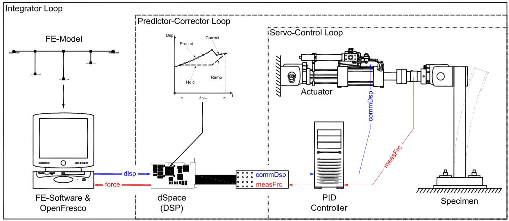
图 3.27 dSpace试验控制（ECdSpace）。
ECdSpace子类使用dSpace CLIB API（dSpace Inc.）访问dSpace数字信号处理器。这些C库提供了PC与实时处理器之间的通信手段。该API支持dSpace DS1103和DS1104 PowerPC实时处理器，它们是用于PC的单PCI硬件板。从图3.27可以看出，ECdSpace试验控制对象用于与在dSpace DSP上执行并为控制系统生成实时命令信号的预测-校正算法通信。由于dSpace控制器板直接通过PCI总线连接到分析机器，因此数字信号（由粗线表示）在内部传输（内存共享、中断线等）。然后，在将数字控制信号传输到控制系统之前，将其转换为模拟信号（由细线表示）。
xPC Target实时硬件（Mathworks）是类似于dSpace控制器板的数字信号处理器，因此也提供了在实时环境中执行预测-校正算法的功能。具体ECxPCtarget子类使用xPC Target API与在目标机器上实时执行的应用程序交互。从图3.28可以看出，TCP/IP网络套接字用于连接分析机器（主机）和数字信号处理器（目标）。另一方面，DSP和控制器之间的通信通过SCRAMNet+实现，SCRAMNet+是一种超低延迟、复制、非相干的共享通用RAM网络。在此类网络中，主机写入内存的数据通过光纤电缆发送到网络上的所有其他节点，这意味着它几乎瞬时复制到所有其他机器的内存中。在图3.28中，粗线再次表示数字信号，细线表示模拟信号。
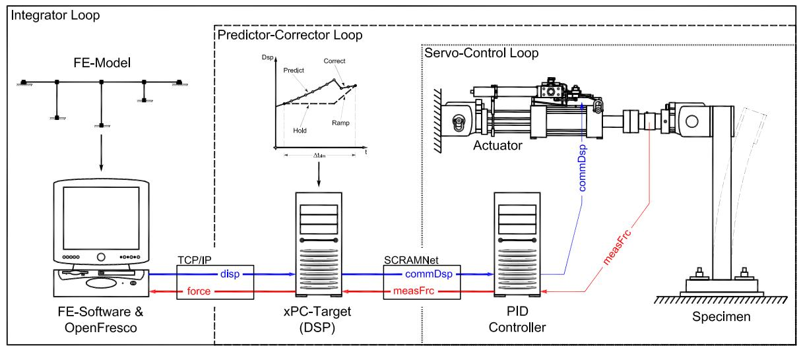
图 3.28 xPC Target试验控制（ECxPCtarget）。
对于使用ECxPCtarget试验控制接口的快速测试，主机和目标之间的TCP/IP连接（由xPC Target API使用）可能成为瓶颈，从而限制执行速度。为了规避这个问题，实现了具体的ECSCRAMNet试验控制子类。
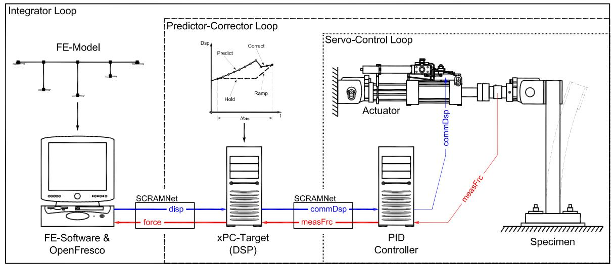
图 3.29 SCRAMNet+试验控制（ECSCRAMNet）。
从图3.29可以看出，该接口用超低延迟SCRAMNet+连接替换了分析机器和xPC Target数字信号处理器之间较慢的TCP/IP连接，该连接等效于DSP和控制器之间的连接。再次，粗线表示数字信号，细线表示模拟信号。
MTS-CSI和LabVIEW：
MTS-CSI和LabVIEW试验控制对象能够与MTS硬件（MTS）和NEES LabVIEW插件（Hubbard等人2004）接口。这两个试验控制对象的共同点是它们都使用控制点抽象来定义被控制和获取的方向和响应量。控制点表示用于向控制器发送命令信号或从数据采集系统获取反馈信号的一个或多个方向（自由度）的逻辑容器。因此，控制点表示输出控制通道或输入数据采集通道的逻辑分组（MTS）。
具体ECMtsCsi子类使用新开发的MTS计算机仿真接口（CSI）（MTS）连接到带有MTS 793软件的MTS FlexTest控制器。目前，此硬件配置不包括预测-校正算法。这意味着由于控制器必须回退到保持和斜坡方法来生成作动器命令信号，因此尚不可能进行连续测试。然而，在FlexTest环境中纳入预测-校正算法在下一个开发周期中具有高优先级。
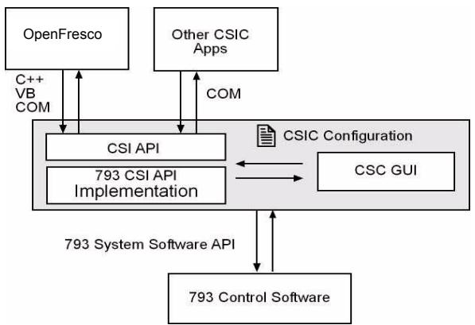
图 3.30 MTS CSI试验控制（ECMtsCsi）。
MTS计算机仿真接口和配置器（CSIC）是一个应用程序，为用户提供高级编程接口，以将其测试应用程序连接到MTS控制器并执行常见的结构测试命令和数据采集操作。用户可以利用配置器的简化图形用户界面（GUI）来创建其测试应用程序并定义控制点。因此，他们可以专注于结构分析，而不是学习详细的低级MTS 793系统编程库来与其MTS控制器接口（MTS）。
ECLabVIEW子类使用单个持久TCP/IP连接与利用NEES LabVIEW NTCP插件（Hubbard等人2004）的LabVIEW控制器通信。ECLabVIEW试验控制对象和LabVIEW插件之间的消息交换基于符合LabVIEW插件规范的简单ASCII格式。LabVIEW插件要求控制命令和数据采集请求以控制点表示。因此，LabVIEW子类与ExperimentalCP类相关联，该类定义控制和数据采集的控制点（见图3.6）。
单轴材料和域模拟：
ECSimulation父类的具体子类可用于测试计算模型、试验设置和网络通信，以确保混合模拟的所有非试验方面在实际试验之前正常运行。
ECSimUniaxialMaterials对象可用于使用1到n个OpenSees单轴材料模型模拟具有1到n个解耦自由度的试件。由于材料模型模拟给定作动器位移组合作动器荷载传感器将测量的力，因此指定材料值的单位是力和位移，而不是应力和应变。
ECSimDomain子类在OpenFresco中提供整个OpenSees域，包括节点、单元、截面和材料库。这使得可以使用OpenSees模拟实际试验试件。ECSimDomain子类与ExperimentalCP类相关联，该类定义控制和数据采集的控制点（见图3.6）。
3.6 OPENSEES作为计算框架
OpenFresco试验软件框架的开发使其能够与任何提供应用程序编程接口（API）且不是黑盒的有限元代码交互。如第3.3节详细描述的那样，通过采用围绕OpenFresco核心组件的多层软件架构来实现这种灵活性。然而，如果OpenSees用作计算框架，则可以显著简化OpenFresco架构，因为两个软件框架具有以下三个共同点：（1）它们都基于面向对象软件设计方法，（2）它们都使用开源开发方法，以及（3）它们都用\(\mathrm { C } { + + }\)编程语言实现。由于简化架构消除了OpenSees（客户端）和中间层（或应用）服务器之间的网络通信，因此与完整的多层架构相比，获得了改进的性能。
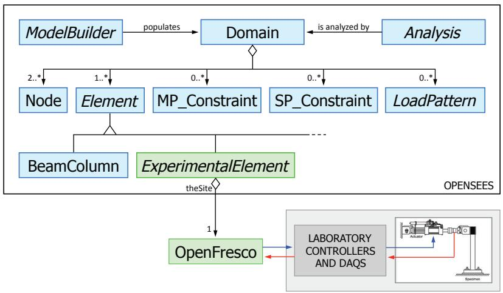
图 3.31 OpenSees作为计算框架。
从图3.31可以看出，抽象ExperimentalElement类可以直接嵌入OpenSees中，因为它派生自Element基类。OpenFresco架构的其余部分保持不变，意味着ExperimentalElement类和ExperimentalSite类之间的关联提供了与其他对象的连接。由于在此架构中，试验单元在OpenSees中充当常规单元，因此它们可以与计算单元一起使用，而无需更改OpenSees。在运行时，OpenSees动态链接到OpenFresco，并直接访问所有OpenFresco命令，而无需两者之间进行任何网络通信。利用OpenSees作为计算框架的本地和地理分布测试的两种软件配置如图3.32所示。
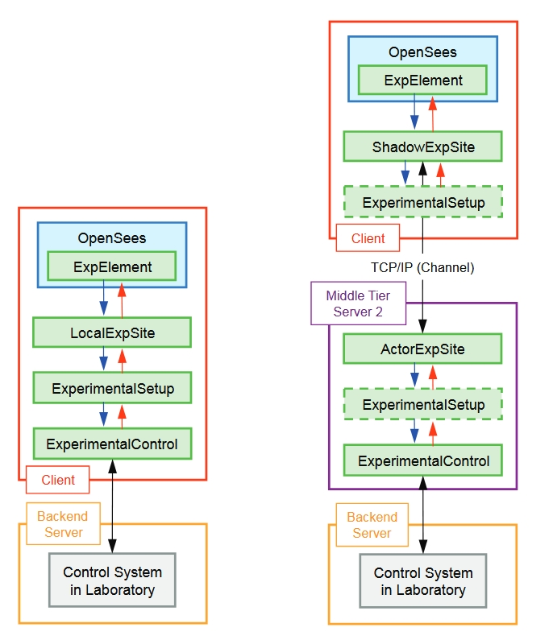
图 3.32 本地和网络部署的OpenSee-OpenFresco配置。
3.7 总结
本章介绍的试验测试软件框架（OpenFresco）支持广泛的计算软件、结构试验方法、试件类型、试验配置、控制和数据采集系统以及通信协议。这种用于混合模拟的软件框架的开发基于结构分析方法，其中混合模拟可以被视为常规有限元分析，其中结构某些部分的物理模型嵌入在数值模型中。使用面向对象方法和对混合模拟期间执行的操作进行严格系统分析来确定软件框架的基本构建模块。为了支持任何有限元分析软件作为计算驱动程序，围绕这些基本OpenFresco构建模块包装了多层客户端/服务器架构。详细解释了这种设计方法，它保证软件框架独立于环境、稳健、透明、可扩展且易于扩展。随后总结了生成的类图、主要基类的接口和序列图。接下来讨论了可用的OpenFresco模板（http://openfresco.neesforge.nees.org），包括分布式计算和测试的通信方法和协议。最后，本章解释了如何将OpenSees用作计算框架以及这样做获得的优势。计算驱动程序求解运动方程所需的积分方法及其在混合模拟中的适用性将在下一章介绍。